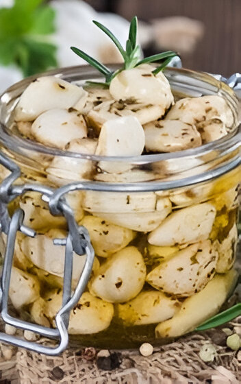
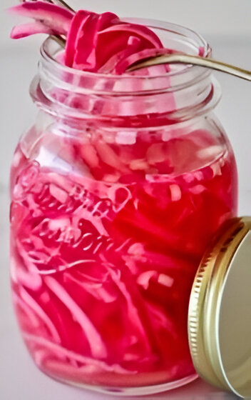

Nuestros productos
Elije el ingrediente que mas te guste y veras lo que tenemos para ofrecerte

Ajo
El ajo es conocido en toda cultura por sus propiedades antibióticas, cardiovasculares y por su alto contenido en calcio y vitaminas, entre otros muchos beneficios. Al fermentarlo, potenciamos todas sus cualidades y lo convertimos en un potente probiótico y aliado de nuestro sistema inmunológico.

Cebolla
La cebolla es antiviral, antidiabética, antioxidante, anticancerígena, antiasmática, antiinflamatoria, hepatoprotectora, neuroprotectora, hipotensora e hipoglucemiante.